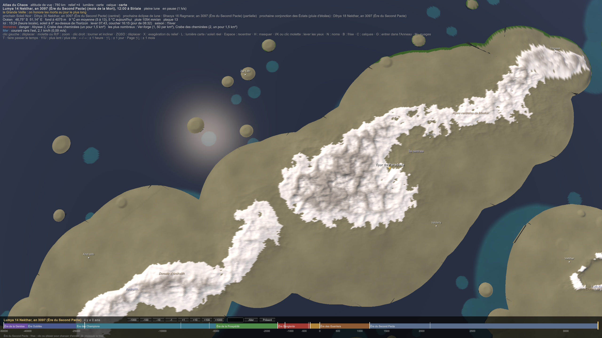
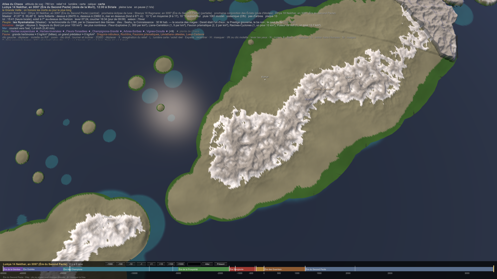

CIV-034 — Maakar, la technocratie érudite
- Le pays : un archipel de la taille d'un continent, qui flotte tout entier, vers 40°S, sous la pluie de l'Anneau. Il est monté à 19–30 km d'altitude pendant la Montée et vit dans sa bulle d'air (PLA-009 Maakar, l'archipel et ses îles flottantes).
- Le peuple : 30 M de Nyamakalas, une espèce à part, née à la Genèse dans les airs. Ils ont six membres, dont deux ailes, ≈ 1,80 m pour ≈ 45 kg, des os chargés de Chaos, une peau sombre et un plumage blanc ; ils pondent des œufs et vivent ≈ 100 ans (BIO-007 Les Nyamakalas).
- Le dieu : Seshu, le Scribe, dieu de la Connaissance. Le dé de leur affinité penche vers la mémoire et l'information.
- La technique : le niveau 7, avec les prémices du 8, porté par les météorites de Chaos, l'hydroélectricité, le soleil et la fusion. Les portails sont des reliques du Panthéon des Dimensions, que Maakar étudie sans les comprendre (CIV-001 Niveaux technologiques).
- Ce qu'on sait d'eux ailleurs : seuls leurs savants ont vu les microbes. Ils mesurent la puissance en ba, la pression de l'âme. Leurs chasseurs de fer vendent à Kemazo le fer tombé du ciel. Les flèches à pointe de fer de Kemazo sont leur terreur (CIV-023 Les peuples hors de Sera).
- Un dieu né chez eux : Kheper-Heka, un Nyamakala devenu dieu des basses sciences vers 1400.
1. Pas de mythe : une théorie, et la vraie origine
Des savants ne croient pas aux mythes. Maakar n'a donc pas de mythe d'origine, mais une théorie.
- La théorie de l'Académie : les Nyamakalas descendraient d'érudits, de mages et d'artisans qui ont refait leur corps par le Chaos, pour les ailes, les os chargés et l'intellect.
- Elle a des arguments : l'Institut de la Médecine et de l'Altération sait déjà muter un corps, et les prothèses prouvent qu'on peut se refaire.
- On l'enseigne dans toutes les Académies libres.
- La vraie origine : ils sont nés à la Genèse, dans les airs, comme les bêtes et les Muntu.
- Pourquoi ils se trompent : la théorie est élégante et flatteuse. Admettre la Genèse, ce serait admettre qu'un dieu les a faits, alors que Maakar ne reconnaît que le mérite. Celui qui la conteste perd son Prestige, donc son classement.
- Le point aveugle du peuple le plus rationnel du monde n'est pas une croyance, c'est un biais de méthode. C'est le pendant savant des Lumas (CIV-033 Khodom), qui préfèrent un mythe à leur origine de bêtes.
- La légende (le premier Archimage-Ingénieur qui branche une île sur le flux du Chaos pour bâtir la Tour du Paradoxe) est un conte d'enfants, dont les savants sourient.
2. Maakar, la source des mages
- Le Draelien, la langue des mages, a été inventé par Dareli, le Premier Mage, champion du dieu de la Connaissance. Le dieu de la Connaissance, c'est Seshu, celui de Maakar.
- Dareli était un Nyamakala : c'est l'Archimage Premier, celui qui « codifia le premier protocole du Chaos appliqué à la science ».
- La Grande Bibliothèque de Maakar garde l'index des dialectes draeliens.
- L'Académie des Arcanes de Maakar forme les mages (MAG-003 Les écoles de magie).
Tous les mages du monde parlent donc une langue née à Maakar. Les académies de Sera n'en sont que des copies, et Maakar le rappelle à chaque génération.
3. Le gouvernement
- Le Conseil du Savoir et de la Recherche (CSR) : cinq membres, désignés tous les 20 ans par le Classement des Génies, et non par un vote.
- On juge chacun sur ses plus grandes découvertes et sur leur impact (technique, social, sur le Chaos).
- Les cinq premiers siègent. Leur mandat est renouvelable seulement s'ils gardent leur prestige.
- Vingt ans, c'est un cinquième d'une vie de Nyamakala.
- Deux chambres :
- la Chambre des Théoriciens (chercheurs, philosophes, mathématiciens) écrit les lois à partir de principes ;
- la Chambre des Ingénieurs les éprouve et corrige ce qui est irréalisable.
- Le Tribunal de la Logique : des juges du droit technique, de l'éthique scientifique et du Chaos, assistés des Oracles Logiques.
- Ce sont des pseudo-artefacts, des machines à glyphes qui calculent des millions de cas. Elles descendent des automates de Tamaati, dont la Balance des académies est déjà une copie.
- La Déprogrammation remplace presque toujours la peine de mort. On efface la mémoire savante d'un coupable pour qu'il ne puisse plus abuser de son savoir.
- C'est un sort de la mémoire, l'affinité du dé de Seshu. Ce que Maakar sait mieux que tout le monde, c'est prendre un savoir dans un esprit.
- Deux classements, et un seul gouverne. Maakar mesure la puissance en ba et le mérite au Prestige scientifique. Seul le Prestige donne un siège. Un archimage d'un ba énorme et sans découverte n'a aucun pouvoir. C'est le seul pays du monde où la force ne gouverne pas.
Les six Instituts (les ministères), chacun dirigé par un Archimage-Ingénieur qui conseille le CSR :
| Institut | Ce qu'il fait |
|---|---|
| de l'Énergie | la fusion, le Chaos stabilisé, les réacteurs ; et les météorites de Chaos, la vraie source de Maakar |
| de la Médecine et de l'Altération | les prothèses, l'hérédité, les mutations par le Chaos |
| de la Communication | les réseaux, les interfaces de l'esprit, les archives |
| des Transports et des Portails | les nacelles, les aéronefs, la tenue des îles, et les portails (§ 4) |
| du Contrôle du Chaos | il surveille les laboratoires et veille à ce que le Chaos ne s'échappe pas |
| de la Défense | peu de soldats ; les armes hybrides, les artefacts vivants, les défenses automatiques |
La vie civile :
- les Guildes du Savoir, par exemple celles des mathématiciens, des architectes et des médecins des machines ;
- les Académies libres, ouvertes à tous, même aux plus pauvres. « Un étudiant moyen de Maakar pourrait diriger une université entière à Sera » ;
- les Banques de Recherche : on n'y emprunte pas de l'argent, mais du temps de machine, des ressources rares et des assistants mécaniques.
4. Les portails : l'Anneau qui tombe sur Maakar
- L'Anneau est fait des restes du dieu des Dimensions, et les météorites de Maakar tombent de l'Anneau. Maakar reçoit donc, chaque année, des fragments d'un dieu qui pliait l'espace.
- Les portails de l'Institut sont bâtis autour de ces fragments. Ils ne marchent que par paires, sur de courtes distances, et personne ne comprend vraiment pourquoi (CIV-001 Niveaux technologiques).
- Les Hejeti veulent ces mêmes restes pour ouvrir leur troisième porte (CIV-032 Les Hejeti, la culture et le regard des autres). Maakar est assis sur ce qu'ils convoitent le plus, et l'Institut du Contrôle du Chaos ne sait pas encore qui il doit surveiller.
5. La défense
- Une armée réduite mais très avancée :
- des unités spécialisées, en petits groupes, armées d'artefacts hybrides ;
- les Sentinelles mécaniques, des automates de combat semi-autonomes, en céramique et en argent-foudre, l'aluminium, jamais en fer, qui viderait leur noyau ;
- la Tour du Paradoxe, à la fois méga-laboratoire, forteresse et quartier général.
- La doctrine, c'est la dissuasion : « une frappe de précision qui fait comprendre à l'ennemi qu'il est en retard de 200 ans ».
- Leur peur, c'est le fer. Une plaie de fer dans une aile vide l'os du Chaos qui le porte (CIV-023 Les peuples hors de Sera), et les archers de Kemazo sont leur cauchemar. L'ironie est que leurs propres chasseurs de fer vendent à Kemazo le fer tombé du ciel.
6. La vie et la culture
- L'emblème : la spirale infinie, le savoir et le Chaos maîtrisé. Les couleurs sont le bleu électrique et l'argent, avec des circuits et des glyphes lumineux sur les bâtiments et les habits.
- Les langues : le nyamakal standard, une langue mathématique et symbolique pour la recherche, et les dialectes des guildes. Et le Draelien, qui vient de chez eux (§ 2).
- Le passage à l'âge adulte :
- le Test d'invention : chaque jeune présente une création, validée par une guilde ou une académie ;
- la Prise du brevet de citoyenneté : l'entrée officielle dans la société savante. Ce jour-là, il prête son premier serment.
- Le statut : il n'y a pas de noblesse de sang. Le seul statut est le Prestige scientifique. Les habits montrent le rang savant, pas le rang social.
- Le peuple : l'éducation est universelle et obligatoire, dès l'enfance. Les citoyens se voient comme les gardiens du futur, et respectent le savoir comme d'autres respectent les dieux.
- Mais il reproche au Conseil de vivre « dans les étoiles » et d'oublier les besoins pratiques. Chez des gens qui vivent à 25 km d'altitude, ce n'est presque pas une image.
- La vie :
- des tours-laboratoires et des ponts aériens, sur des îles qui flottent ;
- des bâtiments « vivants » et interactifs ;
- les débats publics, qui ressemblent à des conférences ;
- le travail avec les automates.
- La table : des repas optimisés, et une nourriture chargée de Chaos par la poussière des météorites.
- La foi : Seshu est un « guide abstrait », qui n'intervient jamais directement. Maakar est sa ferme, et il y laisse le progrès avancer. Kheper-Heka, le Nyamakala devenu dieu, est leur fierté, et un peu leur gêne : un savant devenu dieu, ce n'est pas un modèle de méthode.
- Les fêtes : le Festival des Génies, qui récompense les grandes inventions, et le Jour de la Première Équation, pour la stabilisation du Chaos par les premiers Archimages.
- Les arts : la musique algorithmique, les poèmes mathématiques, les récits de paradoxes, les hologrammes et les fresques en équations.
- Les maximes :
- « La logique ne dort jamais. »
- « Une équation vaut mieux qu'un serment. » Dans un monde où le parjure tue, c'est une provocation : Maakar préfère ce qu'on peut vérifier à ce qu'on jure.
- « Stabiliser le Chaos avant de le craindre. »
- Les tabous : ne jamais laisser de Chaos sans contrôle ; ne jamais divulguer une découverte critique sans l'avoir éprouvée.
7. Les observatoires du bord de la bulle
Maakar n'a pas d'orbite : une orbite demande ≈ 7,8 km/s, et Maakar flotte à 19–30 km. Ses observatoires sont au bord de la bulle, en haut des plus hautes îles. Ils sont au-dessus de 99 % de l'atmosphère : c'est presque l'espace pour regarder le ciel.
8. Le monde
- Avec Kemazo et Arhamya : des relations prudentes et des échanges savants, mais peu d'alliances militaires.
- Avec Khodom : un commerce suivi. Les matériaux vivants des Lumas inspirent leurs forges (CIV-033 Khodom). C'est le plus gros lien commercial hors de Sera.
- Avec Tawurt : Maakar lui vend les fragments du dieu des Dimensions tombés de l'Anneau, et lui achète son sel (CIV-035 Tawurt).
- Ce que Maakar vend : des ressources rares, du savoir, des assistants mécaniques et magiques, de l'énergie stabilisée. Il garde ses secrets : une technique ne s'exporte pas sans la base qui la fait tourner (CIV-001 Niveaux technologiques).
9. Les cités
Les cités sont sur le dessus de l'archipel, à son altitude de flottaison (23 à 30 km).
 
| Cité | Rôle | Où |
|---|---|---|
| la Tour du Paradoxe (capitale) | le pouvoir technocratique, le CSR | au centre de l'île centrale, au pied des Alpes de Maakar : l'aiguille rocheuse (PLA-009) |
| Zameth | la station haute, reliée à la Tour | juste au-dessus de la Tour |
| Andralith | la capitale scientifique, autour de la Grande Chute | l'île de l'ouest |
| Narak | le seul port qui touche l'océan, par câbles | la pointe ouest, au bord de l'archipel |
| Korrun | le grenier | les plateaux du nord-est |
| Orakys | l'énergie, la foudre | sur les Monts Cristallins |
| Valderis | la Cité-Corps, la médecine | au sud de l'île centrale, au-dessus des Grandes Plaines |
| Thryssa | la diplomatie, le carrefour des routes aériennes | la pointe nord-est de l'île centrale, entre l'île centrale, Korrun et Luth-Kael |
| Velkhar | le laboratoire vivant | au bord du cratère de Luth-Kael |
| Zar-Lith | l'île forteresse aux boucliers météoriques | un îlot au nord, seul en mer |
| Naeyra | la cité-temple | à l'écart, sur la pointe nord-est |
| Tovra · Myrras · Khalem | le campus · les archives dimensionnelles · les sentinelles mécaniques | près de la Tour · au sud de Korrun · sur l'île de l'ouest |
Liens
PLA-009 Maakar, l'archipel et ses îles flottantes · BIO-007 Les Nyamakalas · CIV-001 Niveaux technologiques · CIV-002 Les langues · MAG-003 Les écoles de magie · CIV-023 Les peuples hors de Sera · CIV-032 Les Hejeti, la culture et le regard des autres · CIV-033 Khodom · DIV-003 Dieux protecteurs des royaumes